기상기사 (2016-08-21 기출문제)
1과목: 기상관측법
1. 강수량으로 취급되지 않는 것은?
- 연무
- 우박
- 강설량
- 이슬 및 서리
(정답률: 82%)

2. 강수량계 주위에 설치하는 바람막이의 역할과 가장 거리가 먼 것은?
- 강수량계 주위에 기류를 수평으로 만든다.
- 바람에 따라 소리를 내게 해서 조류의 접근을 막는다.
- 강수량계 측면으로 불어오는 풍속을 감소시킨다.
- 강수량계 주위에 떨어진 물방울이 강수량계로 튀어 들어오는 것을 막는다.
(정답률: 85%)
3. 풍향에 관한 설명으로 틀린 것은?
- 바람이 불어오는 방향을 풍향이라 한다.
- 풍속이 0.2m/s 이하일 때는 풍향은 없는 것으로 한다.
- 평균풍향은 관측시간 내의 풍향을 각도로 나타내어 산술평균하여 나타낸다.
- 국제적으로 일기도용 등에서는 풍향은 관측시각 전 10분간의 평균풍향을 말한다.
(정답률: 65%)
4. 기상전보에서 일반적으로 풍향을 나타내는 방위는?
- 8방위
- 16방위
- 32방위
- 36방위
(정답률: 90%)
5. 직달 일사량을 관측할 수 있는 일사계는?
- Pyranometer
- Pyrgeometer
- Pyrheliometer
- Pyrradiometer
(정답률: 70%)
6. 습기흡수로 인한 물리적 차원(physical dimension)의 변화에 의존하여 습도를 측정하는 습도계가 아닌 것은?
- 건습구 온도계(psychrometer)
- 모발 습도계(hair hygrometer)
- 토션 습도계(torsion hygrometer)
- 골드비터 막 습도계(goldbeater's skin hygrometer)
(정답률: 55%)
7. 항공기상 관측에서 일기상태가 양호하여 각 기상 요소를 모두 관측할 필요가 없을 때 운항실무자에게 신속히 전달하기 위해 마련된 용어는?
- IFR
- VFR
- PIREP
- CAVOK
(정답률: 75%)
8. 야간 수평시정 관측용으로 일정거리에 시정 목표로서 광원이 있다. 야간시정에 미치는 영향이 가장 적은 것은?
- 광원의 밝기
- 대기의 습도
- 안개의 유무
- 대기의 투명도
(정답률: 78%)
9. 대기수상(hydro meteors)이 아닌 것은?
- 박무(mist)
- 무빙(rime)
- 무지개(rainbow)
- 날린 눈(blowing snow)
(정답률: 91%)
10. 로테이팅 빔 운고계(rotating beam celiometer)는 무엇을 측정하는 측기인가?
- 시정
- 대기 혼탁도
- 최저 운저 고도
- 구름의 형태(운형)
(정답률: 85%)
11. 고정된 고도각에서 전체 360° 방위각으로 레이더를 스캐닝하여 표출하는 반사도 지시방법은?
- PPI
- RHI
- VAD
- VVP
(정답률: 58%)
12. 기상관측요소와 관측단위의 관계가 틀린 것은?
- 일조 – watt
- 운량 – oktas
- 토양수분 - %
- 일사량 – cal/cm2•min
(정답률: 74%)
13. 기상위성의 적외영상에 대한 설명으로 틀린 것은?
- 운정고도를 관측할 수 있다.
- 지표면온도를 측정할 수 있다.
- 낮과 밤 구분없이 항시 관측할 수 있다.
- 두터운 구름과 얇은 구름을 식별할 수 있다.
(정답률: 62%)
14. 고층 관측 시 사용되는 라디오존데 부착용 기구(balloon)에 주로 사용되는 주입가스의 종류는?
- 오존
- 질소
- 헬륨
- 이산화탄소
(정답률: 91%)
15. 수은기압계에 대한 보정 순서로 옳은 것은?
- 온도보정 – 기차보정 – 중력보정
- 온도보정 – 중력보정 – 기차보정
- 기차보정 – 온도보정 – 중력보정
- 중력보정 – 온도보정 – 기차보정
(정답률: 91%)
16. 햇무리나 달무리는 어떤 운형의 구름이 있을 때 가장 잘 나타나는가?
- 권운(Ci)
- 고적운(Ac)
- 고층운(As)
- 권층운(Cs)
(정답률: 72%)
17. 증발계에 관한 설명 중 틀린 것은?
- 대형 증발계의 구경은 150cm, 깊이는 50cm이다.
- 대형 증발계의 검정공차는 기차 ±0.02mm 이내로 되어있다.
- 증발계의 물빝에 먼지와 불순물이 가라앉아 있을 때에는 물을 교환해야 한다.
- 소형 증발계의 조피망은 야간 또는 강수현상이 있을 때에는 반드시 제거해야 한다.
(정답률: 65%)
18. 황사현상이 나타났을 때 가장 현저하게 변화하는 기상 요소는?
- 기온
- 습도
- 시정
- 일조시간
(정답률: 91%)
19. 다음 설명 중 틀린 것은?
- 이슬점온도는 증기압과 반비례한다.
- 절대습도는 대기 중에 실제로 포함되어 있는 수증기의 절대량이다.
- 혼합비는 단위질량(1kg)의 건조공기와 공존하고 있는 수증기의 질량이다.
- 비습은 단위질량(1kg)의 보통대기(습윤대기) 중에 포함되어 있는 수증기의 질량이다.
(정답률: 73%)
20. 기상위성 관측에 사용되는 파장대에 대한 설명으로 틀린 것은?
- 적외채널은 지표면과 해수면의 온도 등의 관측에 유용하다.
- 마이크로파는 대기의 입자, 수증기, 구름에서 감쇄를 많이 받는다.
- 수증기채널은 6.5~7.0 ㎛ 파장대로서 중간적외영역에 해당한다.
- 가시채널은 하층운, 안개, 적설, 해빙 등의 기상현상을 식별하는데 유용하다.
(정답률: 58%)
2과목: 대기열역학
21. 대기압이 1000hPa인 지표면 부근에서 1hPa의 층후가 A m라고 한다면, 밀도가 그 1/2정도인 500hPa고도에서 1hPa의 층후는 대략 얼마정도인가?
- 0.5A m
- A m
- 2A m
- 4A m
(정답률: 64%)
22. 조건부 불안정에 해당하는 대기의 상태는? (단, γ는 대기의 기온감률이며, Γd, Γs는 각각 건조공기와 습윤공기에 대한 기온감률이다.)
- Γd＜γ＜Γs
- Γs＜γ＜Γd
- Γs＜Γd＜γ
- Γd＜Γs＜γ
(정답률: 78%)
23. 건조대기의 불안정을 표시한 것은? (단, Γ는 주위대기의 기온감률, N은 부력진동수, Γd는 건조단열감률, θ는 온위, z는 연직좌표)
- N2＜0
- Γ＜Γd
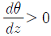
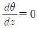
(정답률: 74%)
24. 밀도가 1kg/m3인 균질대기에서 1000hPa-500hPa 간의 평균 두께는? (단, 여기서 중력은 10m/s2로 일정하다고 가정한다.)
- 5 km
- 5.5 km
- 6 km
- 10 km
(정답률: 50%)
25. 1000hPa면의 공기가 500hPa면의 고도까지 단열적으로 상승하였다. 다음 중 옳은 것은?
- 이 공기의 위치에너지와 엔트로피는 모두 감소했다.
- 이 공기의 위치에너지와 엔트로피는 모두 증가했다.
- 이 공기의 위치에너지는 증가했으나 엔트로피는 감소했다.
- 이 공기의 위치에너지는 증가했으나 엔트로피는 일정하다.
(정답률: 59%)
26. 건조단열기온감률을 옳게 나타낸 식은? (단, g는 중력가속도, CP는 정압비열이다.)
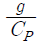
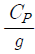
- CP×g
- CP+g
(정답률: 56%)
27. 열역학선도(혹은 대기선도)가 갖추어야 할 조건으로 적합하지 않은 것은?
- 등치선은 곡선보다 직선이어야 판별하기 쉽다.
- 성층권 내의 고도에 대한 고층 관측치가 기입될 수 있어야 좋다.
- 대기의 수직분포와 선도상의 수직분포가 일대일 대응하는 것이 좋다.
- 단열선(adiabats)과 등온선이 이루는 각은 매우 작아야 안정도 결정에 용이하다.
(정답률: 57%)
28. 불포화 상태의 두 공기를 등압 상태에서 혼합할 때, 다음 중 어떠한 결과가 가능한가?
- 두 공기의 온도차가 크면 과포화가 가능하다.
- 과포화는 불가능하지만 포화 상태는 가능하다.
- 두 공기의 온도차가 작을수록 과포화가 가능하다.
- 불포화인 두 공기를 혼합했으므로 과포화는 절대 불가능하다.
(정답률: 91%)
29. Clausius-Clapeyron 방정식이 의미하는 것은?
- 고도변화에 대한 기압의 변화
- 기압변화에 대한 기온의 변화
- 기온변화에 대한 체적의 변화
- 기온변화에 대한 포화증기압의 변화
(정답률: 73%)
30. 이상기체의 상태 방정식에 관한 설명으로 가장 적절한 것은?
- 기체의 밀도, 부피, 온도 사이의 관계식이다.
- 기체의 압력, 부피, 온도 사이의 관계식이다.
- 기체의 압력, 점성, 온도 사이의 관계식이다.
- 기체의 질량, 부피, 온도 사이의 관계식이다.
(정답률: 72%)
31. 기체의 정압비열의 크기에 대한 설명으로 옳은 것은?
- 풍속에 따라 다르다.
- 풍향에 따라 다르다.
- 절대온도에 따라 다르다.
- 기체의 종류에 따라 다르다.
(정답률: 77%)
32. 액체의 물이 증발하여 수증기가 될 때, 필요한 잠열(潛熱, latent heat)은?
- 빙결열
- 승화열
- 융해열
- 증발열
(정답률: 75%)
33. 기온이 20℃일 때 포화수증기압은 23.373hPa 이다. 이 때 상대습도가 60%라면 현재 수증기압은 몇 hPa인가?
- 14.023
- 23.373
- 46.746
- 70.119
(정답률: 58%)
34. 상승한 공기덩이가 LCL에 도달한 후 원래의 기압면 고도까지 포화혼합비선을 따라 내려왔을 때의 온도는?
- 상당온도
- 습구온도
- 습구온위
- 이슬점온도
(정답률: 35%)
35. 다음 중 온도(기상학적 온도)의 단위를 가지지 않은 것은?
- 온위
- 가온도
- 혼합비
- 습구온도
(정답률: 77%)
36. 대기 중에서 내부에너지의 변화는 어떻게 표현되는가? (단, CV: 정적비열, CP: 정압비열, T : 온도, p: 압력, V: 체적, α: 비적)
- pㆍdα
- pㆍdV
- CPㆍdT
- CVㆍdT
(정답률: 55%)
37. 1 Joule은 약 몇 cal의 열량에 해당되는가?
- 0.04
- 0.24
- 2.45
- 4.20
(정답률: 73%)
38. 다음 중 비기체상수가 가장 큰 기체는?
- 수증기
- 건조 공기
- 습윤 공기
- 이산화탄소
(정답률: 66%)
39. 단열선도에 포함되지 않는 선은?
- 등온선
- 건조단열선
- 상대습도선
- 포화혼합비선
(정답률: 95%)
40. 아래 식은 기압과 고도의 관계를 나타내는 식이다. 어떤 상태를 가정하고 유도한 것인가? (단, P는 기압, z는 고도, P0는 지상기압, T는 절대온도, R은 공기의 기체상수, g는 중력가속도)
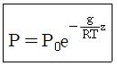
- 등밀대기
- 등온대기
- 표준대기
- 건조단열대기
(정답률: 40%)
3과목: 대기운동학
41. 다음 그림은 200hPa 고도에서 제트류의 모습이다. 그림의 지점 중에서 음의 와도가 가장 클 것으로 판단되는 곳은?
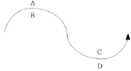
- A
- B
- C
- D
(정답률: 73%)
42. 지표면 근처에서의 수평순환 면적을 A, 이 면적에 대한 적도면 투영 면적을 Ae, 지구자전각속도를 Ω라 할 때, 절대순환과 상대순환의 차는?
- ΩA
- ΩAe
- 2ΩA
- 2ΩAe
(정답률: 60%)
43. 북위 30도에 위치한 어떤 공기덩이가 5.0×10-5/s의 절대 소용돌이도를 가지고 있다. 공기덩이가 절대소용돌이도를 보존하면서 북위 90도로 이동하였을 때 갖게 되는 상대소용돌이도는? (단, 북극에서 지구자전에 의한 행성소용돌이도는 1.4×10-4/s)
- -9.0×10-5/s
- -7.2×10-5/s
- 3.6×10-5/s
- 19.0×10-5/s
(정답률: 41%)
44. 지균풍(geostrophic wind)의 발산(divergence)은? (단, Ug, Vg는 각각 동서 및 남북방향의 지균풍 성분, a는 지구반경, ø는 위도이다.)
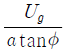
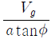
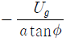
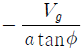
(정답률: 58%)
45. 공기덩이를 수직방향으로 δz만큼 이동시켰을 때 이 공기덩이가 받는 가속도는 아래와 같이 표시된다. 이 때 N이 나타내는 것은?
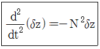
- Rossby number
- Reynolds number
- Richardson number
- Brunt Vaisala frequency
(정답률: 60%)
46. 대기 순환에서 각운동량은 적도에서 중위도와 극으로 수송된다. 이 때 적도에서 고위도로 수송되는 각운동량은 어떻게 생성되는가?
- 적도 상공에서의 생성
- 지구자전으로 인한 생성
- 편서풍지역으로부터의 수송
- 편동풍지역에서 마찰에 의한 생성
(정답률: 52%)
47. 연직속도를 추정하는 방법에 운동학적 방법이 있다. 이 방법은 무슨 방정식을 사용하는가?
- 상태 방정식
- 연속 방정식
- 운동량 방정식
- 열역학에너지 방정식
(정답률: 48%)
48. 그림과 같이 유체의 흐름방향으로의 단위벡터를
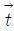
, 이 벡터의 왼쪽으로 직교하는 단위벡터를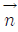
, 연직방향의 단위벡터를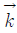
, 그리고 곡률반경을 R이라 한다면, 다음 중 수평가속도를 옳게 표시한 것은? (단, V는 유체의 속력을 나타낸다.)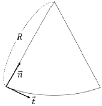
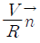
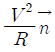
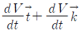
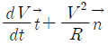
(정답률: 56%)
49. 북반구의 상이한 두 등압면 고도를 나타낸 다음 그림 중, 온도풍의 방향은?
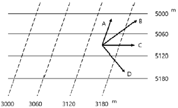
- A
- B
- C
- D
(정답률: 62%)
50. 아열대성 고기압대에 사막이 생기는 가장 큰 이유는?
- 고온의 영향
- 해류의 영향
- 현열의 이동
- 하강기류의 지속
(정답률: 82%)
51. 기압경도력에 대하여 옳게 설명한 것은?
- 두 등압선 간격이 넓은 곳에서 더 강하다.
- 두 지점 사이에서는 기압차가 클수록 강하다.
- 지상일기도에서는 공기의 밀도와 관련이 없다.
- 등압선 간격이 같을 때 고위도보다 저위도에서 더 강하다.
(정답률: 78%)
52. 북반구 중위도 상공에서 그림처럼 기류가 흐르고 있다. A와 C에서의 상대소용돌이도는?
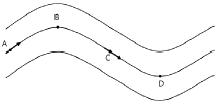
- A에서는 감소하고 C에서는 일정하다.
- A에서는 감소하고 C에서는 증가한다.
- A에서는 증가하고 C에서는 일정하다.
- A에서는 증가하고 C에서는 감소한다.
(정답률: 69%)
53. 연직운동방정식의 다음 항 중에서 종관규모 운동의 경우에 가장 적은 것은?
- 중력항
- 가속도항
- 지구곡률항
- 기압경도력항
(정답률: 48%)
54. 그림으로부터 지균풍속을 구하는 공식은? (단, ρ는 대기밀도, Ω는 지구의 각속도, ø는 위도)
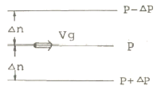
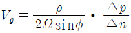
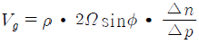
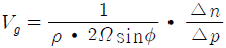
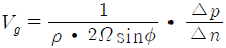
(정답률: 71%)
55. 가장 지속적인 방향을 가진 바람은?
- 무역풍
- 편서풍
- 해양풍
- 제트기류
(정답률: 50%)
56. 편서풍대의 제트기류는 보통 어느 정도의 높이에 있는가?
- 5 km
- 12 km
- 20 km
- 25 km
(정답률: 83%)
57. 열대성 저기압 시스템의 주된 발달 기구(mechanism)는?
- 에디 운동 에너지
- 동서 평균 운동 에너지
- 수증기 응결에 의한 잠열 방출
- 비균질 가열에 의한 에디 위치 에너지
(정답률: 70%)
58. 관성류(inertial flow)의 설명 중 틀린 것은?
- 주기는 반진자일과 같다.
- 기압경도력과 원심력이 평형을 이룬다.
- 북반구에서 항상 고기압성 운동을 한다.
- 원운동을 하며 이 원의 반경을 관성반경이라 한다.
(정답률: 50%)
59. 일반적으로 마찰층의 상부는 어느 고도에 위치하는가?
- 300 ~ 500 m
- 1000 ~ 1500 m
- 2000 ~ 3000 m
- 4000 ~ 5000 m
(정답률: 64%)
60. 지구규모운동에서 에디 위치에너지는 어떠한 메카니즘에 의하여 증가되는가?
- 잠열의 방출
- 현열의 증가
- 각운동량의 증가
- 현열 flux의 수렴
(정답률: 58%)
4과목: 기후학
61. 대기의 창(atmospheric window)의 복사에너지의 파장 범위로 가장 적합한 것은?
- 0.2 ~ 0.4 ㎛
- 0.4 ~ 0.74 ㎛
- 1 ~ 5 ㎛
- 8 ~ 13 ㎛
(정답률: 82%)
62. 북반구에서 잠열 생성이 가장 활발한 지역은?
- 적도
- 극 고압대
- 중위도 저압대
- 아열대 고압대
(정답률: 50%)
63. 일반적으로 태풍이 나타나지 않는 곳은?
- 동아시아 지방
- 호주 동해안 지방
- 아프리카 남서해안 지방
- 멕시코 동부 카리브해 지방
(정답률: 70%)
64. 고위도에서 태양으로부터 지표면에 도달하는 태양 복사에너지의 양은 지구표면에서 방출하고 있는 지구 복사보다 그 양이 어떠한가?
- 같다.
- 많다.
- 적다.
- 계산할 수 없다.
(정답률: 78%)
65. 대기 중의 이산화탄소량의 분포 및 변화에 대한설명 중 틀린 것은?
- 북반구 중위도지역 지면 부근 연중 최젓값은 8~10월경임
- 지면 부근 이산화탄소량은 높은 고도에서보다 연 변동 폭이 큼
- 북반구에서 고도별 평균값은 하층에서 크고, 대기상층에서 적음
- 산업혁명 시기와 대비하여 20세기말 대기 중 농도는 약 2배 증가함
(정답률: 65%)
66. 월별 체감기후를 나타내는 클라이모 그래프의 세로축과 가로축에 주어지는 기후 요소는?
- 세로축에 강수량, 가로축에 기온
- 세로축에 기온, 가로축에 강수량
- 세로축에 기온, 가로축에 상대습도
- 세로축에 상대습도, 가로축에 기온
(정답률: 56%)
67. 기후학(climatology) 및 기후에 대한 설명으로 적합하지 않은 것은?
- 대기의 장기간 평균된 전 지구적 운동을 다룬다.
- 극지방에서 강수량이 적은 것은 발산에 대응된다.
- 기후를 날씨 현상이 누적된 것이라고 생각한다.
- 대기의 발산구역은 건조지역, 수렴구역은 습윤지역이 되는 경향이 있다.
(정답률: 62%)
68. 오호츠크해 기단에 대한 설명으로 가장 거리가 먼것은?
- 한랭 다습하다.
- 장마전선과 관련이 있다.
- 동계에 불안정하고, 하계에 안정하다.
- 북태평양 오호츠크해가 발원지이다.
(정답률: 85%)
69. 해양성 기후(oceanic climate)가 나타나는 지역의 특징에 대한 설명 중 틀린 것은?
- 구름이 많고 강수량이 많다
- 일사량이 많고 증발이 심하다.
- 기온의 변화가 적고 습도가 연중 높다.
- 바람이 보통 강하고 공기의 순환이 활발하다.
(정답률: 66%)
70. 다음 중 소빙하기(little ice age)로 분류되는 기간으로 가장 적절한 것은?
- B.C. 8,000 ~ 6,000 년대
- B.C. 1,800 ~ 1,400 년대
- A.D. 1,000 ~ 1,300 년대
- A.D. 1,400 ~ 1,800 년대
(정답률: 71%)
71. 몬순(monsoon)에 대한 설명 중 틀린 것은?
- 몬순에 의한 계절풍의 방향은 겨울철에 대륙쪽으로 향한다.
- 몬순에 의한 계절풍은 탁월풍(prevailing wind)의 일종이다.
- 몬순에 의한 계절풍이 가장 뚜렷한 지역은 인도와 동아시아 지역이다.
- 몬순에 의한 계절풍의 풍향은 여름철과 겨울철에서 대략 반대 방향이다.
(정답률: 72%)
72. 수륙분포가 기후인자로서의 역할을 하는 이유로 가장 거리가 먼 것은?
- 비열차
- 전도율차
- 일사량차
- 열흡수율차
(정답률: 75%)
73. 다음의 대기 순환 중 수명이 가장 짧은 것은?
- 계절풍
- 해륙풍
- 이동성 고기압
- 온대성 고기압
(정답률: 84%)
74. Köppen의 기후 분류 기호에 대한 내용 중 틀린 것은?
- Af: 열대우림기후
- BS: 사막기후
- Df: 냉대습윤기후
- ET: 툰드라기후
(정답률: 74%)
75. 무상기간(無霜期間, 서리가 없는 기간)에 가장 관계가 깊은 기상 요소는?
- 일최고 기온
- 일최저 기온
- 일평균 기온
- 월평균 기온
(정답률: 77%)
76. Köppen의 기후구를 기준으로 할 때 다음 중 그림 Ⓐ역에 해당하는 기후구는?
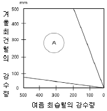
- Aw
- B
- Cf
- Dw
(정답률: 74%)
77. 산맥이 국지기후에 주는 영향에 대한 설명 중 틀린 것은?
- 산맥과 해안선 사이의 지역은 지형적인 구름과 지형적 강수가 유발된다.
- 내륙에 동서로 놓인 산맥의 경우 극 쪽의 여름철 강수량이 증가하고 적도 쪽의 겨울철 강수량은 감소한다.
- 중위도에서 남북으로 놓여있는 해안선에 나란한 산맥의 경우 국지풍이 더 커지고 구름과 강수량이 증가한다.
- 내륙에 동서로 놓인 산맥의 경우 여름에는 남과 북이 모두 따뜻하나 겨울에는 극 쪽이 적도 쪽보다 더 추워져 기온차가 커진다.
(정답률: 69%)
78. 세계적으로 연평균 강수량이 가장 많은 곳은?
- 중국 상해 지방
- 아르헨티나 지방
- 알프스(Alps)산맥 지방
- 인도 아삼의 체라푼지(Cherra-punji) 지방
(정답률: 90%)
79. 열대 습윤 기후의 특징으로서 틀린 것은?
- 연중 고온이다.
- 대류성 강우현상이 거의 없다.
- 기온의 일교차가 연교차보다 크다.
- 주요 식생분포는 활엽 상록수림이다.
(정답률: 89%)
80. Köppen의 기후대 구분 중 무수목기후(無樹木氣候)가 속하는 것은?
- A, B
- B, C
- B, E
- B, D
(정답률: 80%)
5과목: 일기분석 및 예보론
81. 북반구에서 다음 그림과 같은 대기 수직 구조에서 O로 표시된 지점에서의 풍향은 어느 방향인가? (단, P, P-1, P-2는 등압면을 의미한다.)
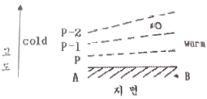
- A에서 B로
- B에서 A로
- 앞면에서 뒷면(⨂)
- 뒷면에서 앞면(⨀)
(정답률: 58%)
82. 저기압 발생, 발달을 예측하는 데 사용되는 보조자료로 적합하지 않은 것은?
- 층후도
- 단열선도
- 온도이류도
- 와도분포도
(정답률: 50%)
83. 평지에서 기온이 15℃일 때 주위에 높이 1000m인 산이 있다면 정상에서의 기온은 대략 얼마로 예상되는가? (단, 기온감률은 높이 100m당 0.65℃이다.)
- 5.5℃
- 6.5℃
- 7.5℃
- 8.5℃
(정답률: 82%)
84. 여름철 장마전선과 관련성이 큰 오호츠크해 고기압의 특징이 아닌 것은?
- 주로 장마초기에 영향을 미친다.
- 한랭하고 다습한 성질을 가진다.
- 북태평양 고기압처럼 키가 큰 고기압이다.
- 북태평양 고기압과의 사이에서 장마전선을 형성한다.
(정답률: 95%)
85. 상당온도와 기온과의 차는 무엇으로 주어지는가? (단, f: 전향력, CP: 건조공기의 정압비열, γ: 혼합비, R: 로스비 변형반경, L: 증발의 잠열)
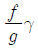
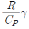
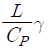
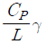
(정답률: 50%)
86. 다음 수치예보모형 중 측면 경계조건이 불필요한 것은?
- 국지모형
- 지역모형
- 전구(全球)모형
- 북반구(北半球)모형
(정답률: 70%)
87. 한대 제트(polar jet)와 관련된 특징으로 가장 적합한 것은?
- 300hPa 최대풍속이 50kts 미만이다.
- 남과 북의 기온경도가 클수록 제트기류의 풍속은 감소한다.
- 상층 기압골과 관계된 제트의 파동 전면(동쪽)에서 고기압이 발달한다.
- 200hPa 일기도에서 사행하는 제트축(jet streak)의 북쪽에 위치한 저기압 중심의 기온이 따뜻하다.
(정답률: 34%)
88. 두 등압면 사이의 두께 즉 층후(thickness)는 그 기층의 어느 요소의 크기와 정비례하는가?
- 평균 풍속
- 평균 가온도
- 평균 일사투과율
- 평균 한기유입도
(정답률: 79%)
89. 다음 중 날씨변화에 앞서 나타나는 현상으로 가장 거리가 먼 것은?
- 동풍은 일기 악화의 전조이다.
- 햇무리가 나타나면 맑을 징조이다.
- 렌즈 구름은 바람이 강해질 전조이다.
- 종소리가 크게 들리면 비가 올 확률이 높다.
(정답률: 67%)
90. 뇌우 예보 시 사용하는 지수가 아닌 것은?
- 케이 지수(K-Index)
- 층후 지수(Thickness Index)
- 토탈 토탈 지수(Total Total Index)
- 쇼월터 안정 지수(Showalter Stability Index)
(정답률: 45%)
91. 직각 좌표계에서 수평발산(lateral divergence)은 다음 중 어느 식으로 표시되는가? (단, u와 υ는 각각 x와 y방향의 풍속이다.)
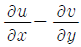
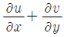
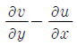
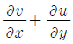
(정답률: 62%)
92. 제트류 분석은 주로 어떤 일기도에서 하는가?
- 200hPa 일기도
- 500hPa 일기도
- 700hPa 일기도
- 850hPa 일기도
(정답률: 70%)
93. 일기의 해석 내용이 틀린 것은?
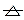
1120-1230 : 11시 20분에 싸락우박이 시작되어 12시 30분에 싸락우박이 끝남- )∙( (NW)1450-1515 : 14시 50분부터 15시 15분까지 북서쪽 5km 밖에 강수현상이 목측됨
- 0610- 0720- 0745-0755 : 6시 10분에 눈이 시작하여 7시 20분에는 진눈깨비로 되고 7시 45분에는 어는 비로 변해서 7시 55분에 끝남
- (SW 2)1530-
 (S 1)1536-1541 : 15시 30분에 회오리바람이 남서쪽 2km에서 발생하여 15시 36분에 남쪽 1km 지점으로 이동하였고 15시 41분에 회오리바람 끝남
(S 1)1536-1541 : 15시 30분에 회오리바람이 남서쪽 2km에서 발생하여 15시 36분에 남쪽 1km 지점으로 이동하였고 15시 41분에 회오리바람 끝남
(정답률: 60%)
94. 북태평양 고기압의 특징으로 적절하지 않은 것은?
- 여름철 발달하여 우리나라에 무더위를 가져온다.
- 지구대기 대순환에 의해 나타나는 고기압이다.
- 지상부터 상층까지 고기압의 특징이 나타나는 키가 큰 고기압이다.
- 중심의 기온이 따뜻한 상층의 티벳고기압과 역학적 구조가 비슷하다.
(정답률: 70%)
95. 전선의 형성과 가장 관련이 높은 운동은?
- 변형운동
- 전이운동
- 팽창운동
- 회전운동
(정답률: 50%)
96. 다음 중 풍속이 일정할 때 전향력이 가장 큰 곳은?
- 적도 지방
- 위도 30° 부근
- 위도 45° 부근
- 위도 60° 부근
(정답률: 70%)
97. 국제기상전보식에서 Nddff군의 ff는?
- 운형
- 풍속
- 풍향
- 전운량
(정답률: 77%)
98. 전선 위치 결정의 일반사항에 대한 설명으로 틀린 것은?
- 기온, 노점온도, 기압이 불연속을 이루어 그 등치선이 밀집 또는 급변하는 지역이지만, 풍향은 연속을 이루어 급변하지 않는 지역에 해당된다.
- 단열선도 또는 수직단면도 상에서 기온역전층이 있고 이 역전층에서 고도에 따른 풍향 변화가 반전인 경우는 한랭전선, 순전인 경우는 온난전선이다.
- 한랭전선의 경우 풍향의 수직변화는 하층에서 북서풍이고, 상층에서 남서풍이 보통이며, 온난전선에서는 하층에서 보통 남동풍이고, 상층에서는 남서풍이 되는 경우가 많다.
- 온난전선은 그 전방에서는 넓게 악천을 보이지만 후방에서는 비교적 호전을 이루고, 한랭전선에서는 전방과 후방의 구별없이 전선상에서 비교적 좁게 악천이 나타난다.
(정답률: 52%)
99. 한 일기도 상에서 두 가지 이상의 등치선을 그려야 할 경우의 순서로 바르게 나타낸 것은?
- 등압선(등고선)-등온선-유선-등풍속선
- 등압선(등고선)-등온선-등풍속선-유선
- 등압선(등고선)-유선-등풍속선-등온선
- 등온선-등압선(등고선)-등풍속선-유선
(정답률: 35%)
100. 다음 중 대기의 내부 요인이 가장 큰 역할을 하는 현상은?
- 태풍
- 산곡풍
- 초장파
- 해륙풍
(정답률: 40%)